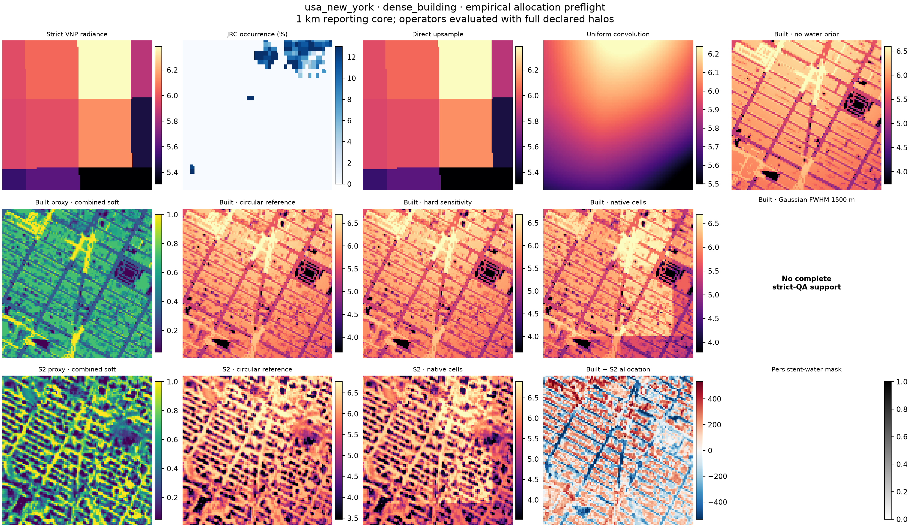
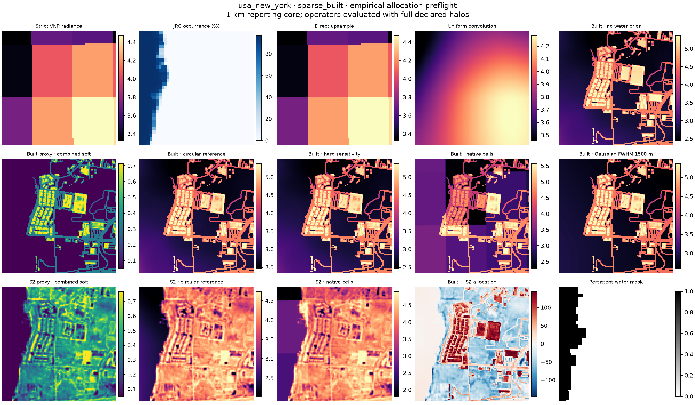
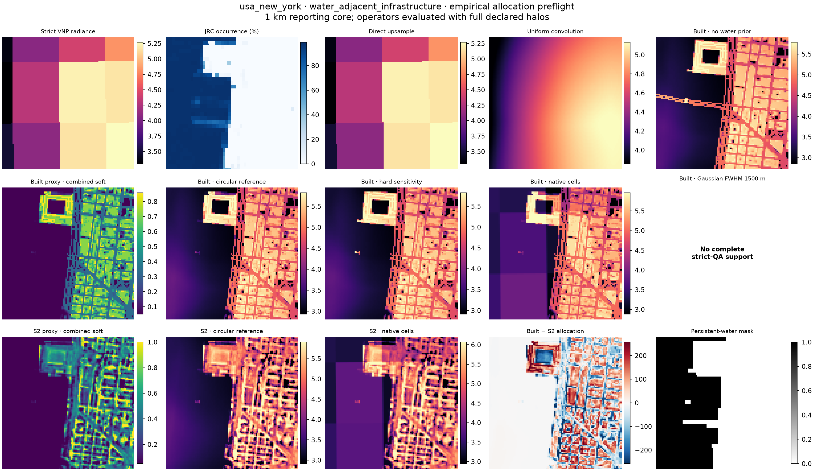
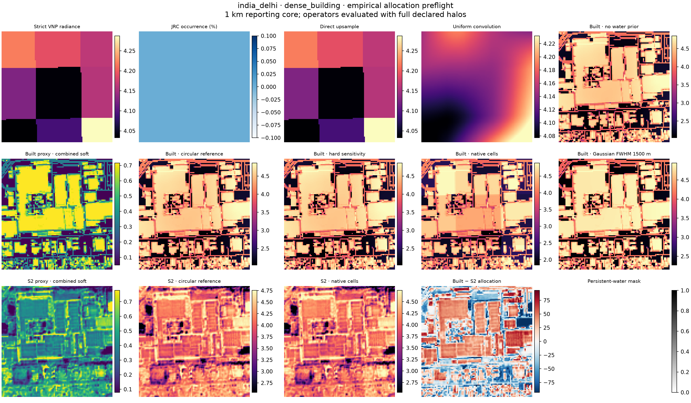
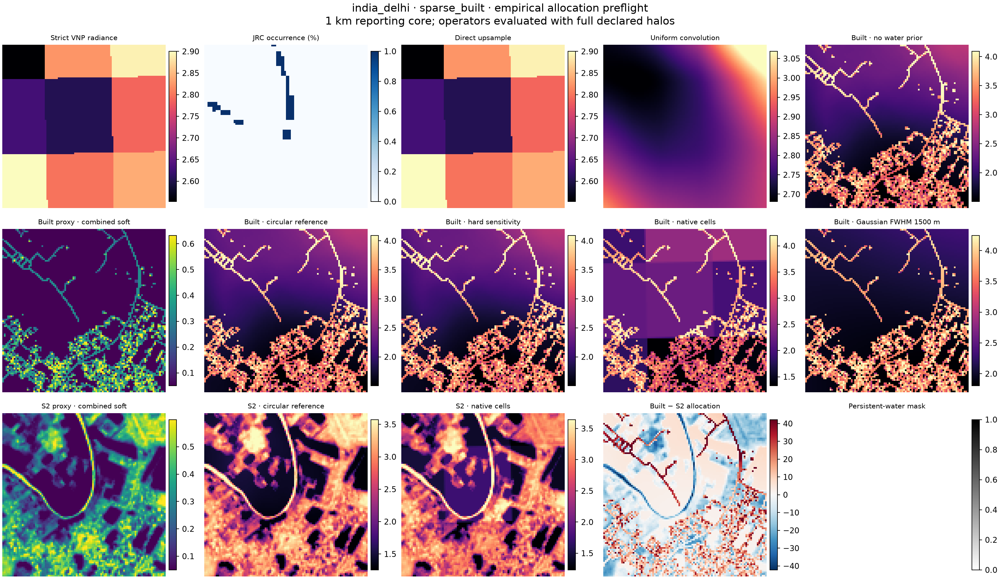
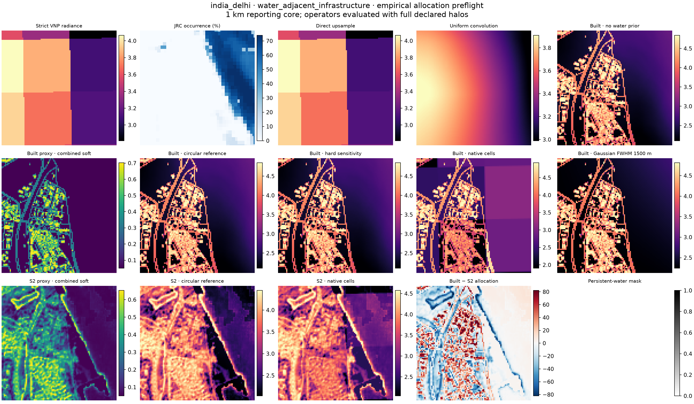

Day 2 empirical allocation preflight
Each figure shows a 1 km reporting core selected without VNP radiance. The operator was evaluated on a larger window covering the complete support of the largest declared Gaussian kernel. Panel stretches are display-only.
The JRC water panels are internal-prior diagnostics, not independent
shoreline validation. See summary.json and metrics.csv
for numerical results and provenance.





